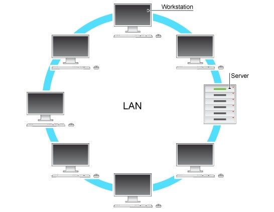
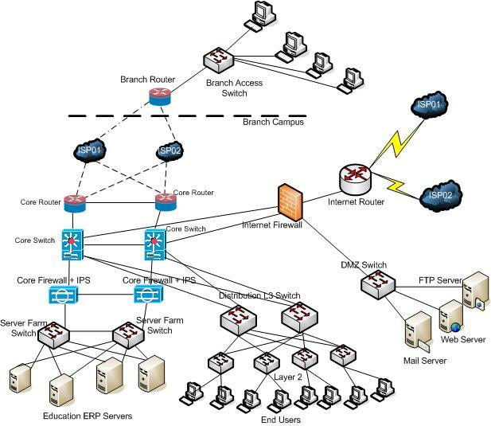
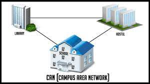

LAN(Local Area Network) ---> A local area network is a computer network that interconnects computers within a limited area such as a residence, school, laboratory, university campus or office building. By contrast, a wide area network not only covers a larger geographic distance, but also generally involves leased telecommunication circuits.
WAN(Wide Area Network) ---> A wide area network is a telecommunications network that extends over a large geographic area for the primary purpose of computer networking. Wide area networks are often established with leased telecommunication circuits.

MAN(Metropolitan Area Network) ---> A metropolitan area network is a computer network that interconnects users with computer resources in a geographic region of the size of a metropolitan area.

PAN(Personal Area Network) ---> A personal area network is a computer network for interconnecting electronic devices centered on an individual person's workspace. A PAN provides data transmission among devices such as computers, smartphones, tablets and personal digital assistants.
CAN(Campus Area Network) ---> A campus network, campus area network, corporate area network or CAN is a computer network made up of an interconnection of local area networks within a limited geographical area.
